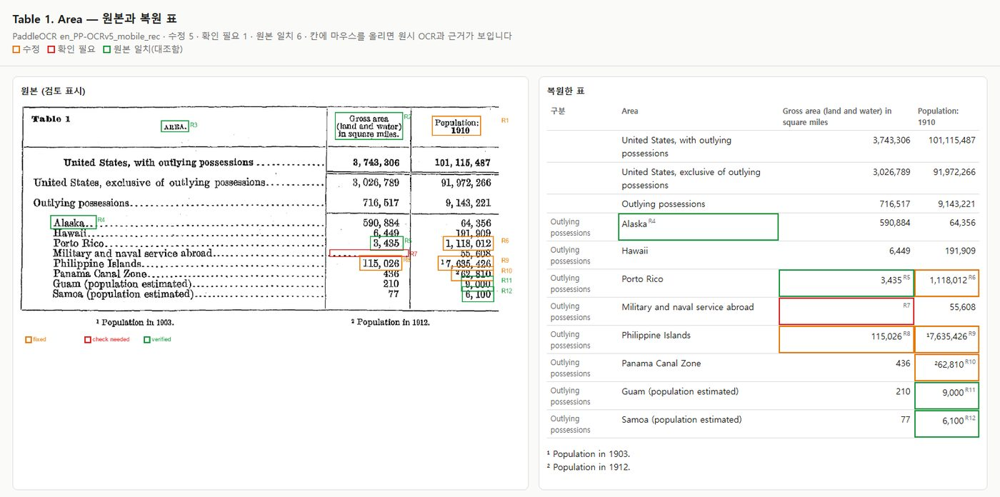

[아이펠 AI에이전트 3기] AI 이해하고 사용하기 ①, 신뢰도 0.96도 틀릴 수 있어요 🔍
🔢 ➡️ 🧠 ➡️ 🔍
안녕하세요! 👋 아이펠 AI에이전트 3기, 이번 주부터 드디어 "AI 이해하고 사용하기" 모듈이 시작됐어요.
웹 서비스를 만들던 손을 잠깐 멈추고, 내가 매일 쓰는 AI가 속에서 무슨 일을 하는지 들여다본 한 주였습니다.
1. 이번 주에 배운 것: AI는 어떻게 배우고, 읽고, 답할까 🧠
교안 다섯 개가 한 줄로 이어졌어요. 숫자로 배우고 → 글을 이해하고 → 어디서 돌릴지 정하고 → 이미지를 읽는 흐름이에요.
| 교안 | 한 줄 요약 |
|---|---|
| 🔢 인공지능의 학습 | 규칙을 짜는 대신, 데이터에서 "예측 → 오차 → 조정"을 반복해 규칙을 스스로 찾게 하기 |
| 🔗 트랜스포머 직관 | 글을 토큰으로 자르고, 서로 참고(어텐션)해서, 다음 토큰 하나를 예측하는 일을 반복 |
| 🔬 어텐션 해부도 | 다섯 토큰의 실제 숫자로 Q·K·V → 점수 → 비율 → 섞기를 한 단계씩 따라가기 |
| 💻 LLM과 로컬 실행 | 클라우드 API냐 내 컴퓨터냐, 데이터·비용·주권으로 실행 위치를 판단하기 |
| 🖼️ AI가 이미지를 읽기까지 | 값·위치·경계 중 필요한 출력을 먼저 정하고, 원본으로 돌아가 검증하기 |
🔢 학습은 결국 "틀린 만큼 조금 고치기"
카페 30일치 매출 데이터만 보고, 숨은 규칙(2x+1)을 모델이 스스로 찾아내는 실습이 있었어요.
weight 하나, bias 하나짜리 아주 작은 모델인데도, 틀린 만큼 고치기를 600번 반복하면 숨은 규칙에 가까워져요.
① 예측한다 → ② 얼마나 틀렸는지 잰다 → ③ 틀린 만큼 조금 고친다 → 반복 🔁
회귀(얼마인가)도, 분류(어느 쪽인가)도, 남이 학습시킨 모델을 물려받는 파인튜닝도 모두 이 고리 위에서 움직인대요.
그리고 교안이 계속 강조한 한 문장. 결과를 가르는 건 화려한 모델보다 데이터예요.
🔗 토큰이 두 배면, 계산은 네 배
트랜스포머는 모든 토큰이 서로를 한 번씩 비교해요. 그래서 입력이 두 배로 길어지면 비교할 짝은 네 배 가까이 늘어나요.
"그냥 자료를 다 넣어 주면 알아서 잘 하겠지"가 왜 비싼지 처음으로 이해가 됐어요. 💸
게다가 많이 넣는다고 다 잘 쓰는 것도 아니래요. 긴 입력의 중간에 있는 정보를 놓치는 현상(Lost in the Middle) 이 있어서, 중요한 내용은 어디에 둘지까지 내가 설계해야 해요.
💡 HR식으로 이해하기: 80쪽짜리 보고서를 통째로 올려도, 결재권자는 앞 요약과 끝 결론만 기억하는 것과 비슷해요. 중요한 건 위치를 정해서 올려야 하더라고요.
💻 "학습에 안 쓴다"와 "남지 않는다"는 다른 말
로컬 LLM 수업에서는 70억 개 파라미터 모델(약 14GB)을 양자화로 줄이면 노트북에도 올라간다는 걸 배웠어요. 가중치의 눈금을 거칠게 해서 크기를 줄이는 방식이에요.
그래서 수업 중에 Ollama로 가장 가벼운 모델(qwen3.5:0.8b)을 소개받아 제 노트북에 직접 설치해 봤어요.
ollama run qwen3.5:0.8b결과는… 답이 나오기까지 너무 느려서 결국 삭제했어요. 😅
가벼운 버전이라 그런지 답의 품질도 평소 쓰는 Claude나 GPT에는 한참 못 미쳤고요. 로컬 LLM을 제대로 쓰려면 컴퓨터 성능이 받쳐 줘야 한다는 걸 직접 느꼈어요. "내 컴퓨터에서 돌리면 공짜"가 아니라, 장비 값과 기다리는 시간이라는 비용을 내는 거였어요.
그런데 제일 오래 남은 건 기술보다 판단 기준 쪽이었어요.
| 따질 것 | 질문 |
|---|---|
| 🗂️ 데이터 | 내 문장이 어디를 지나고, 어디에 얼마나 남는가? |
| 💰 비용 | 청구서가 없어도 장비·사람 시간이라는 비용이 있지 않은가? |
| 🛡️ 주권 | 모델이 바뀌거나 멈추면, 누가 바꾸고 멈추고 설명할 수 있는가? |
💡 HR 15년 차의 생각: 인사 데이터는 개인정보 덩어리예요. "학습에 쓰지 않습니다"라는 약관 한 줄만 보고 평가 의견을 API에 보내면 안 되겠다는 생각이 들었어요. 로그·보관 기간·저장 위치까지 확인할 것들이 따로 있었어요.
🖼️ 이미지를 읽기 전에, 받고 싶은 답의 모양부터
같은 사진이라도 필요한 답은 다 달라요.
- 📄 값이 필요하면 → OCR (글자를 읽고, 항목과 값을 연결)
- 📦 위치가 필요하면 → 객체 탐지 (이름·박스·점수)
- ✂️ 경계가 필요하면 → 이미지 분할 (픽셀 단위 마스크)
그리고 모델을 재는 눈금도 배웠어요. 임계값을 올리면 화면은 깔끔해지지만 놓치는 것(미탐) 이 늘어나고, 내리면 헛것(오탐) 이 늘어나요. 화면이 깔끔한 것과 업무에서 안전한 건 다른 얘기더라고요.
2. 과제: 100년 전 인구조사 표를 OCR로 되살리기 📜
선택 과제 두 개 중 저는 B. OCR 표 복원을 골랐어요. 1913년에 발행된 미국 인구조사 보고서의 표(Table 1)를 PaddleOCR로 읽어, 행과 열이 맞는 CSV와 문서로 만드는 과제예요.
😅 먼저, 기능 많은 웹 서비스부터 만들었는데…
의욕이 넘쳐서 과제 기준을 꼼꼼히 읽기 전에 OCR 웹 서비스부터 만들었어요.
여러 장 한꺼번에 올리기, 끌어다 놓기, 표를 CSV로 뽑기, 이미지 자동 보정(신뢰도 59% → 66%)까지 넣고 GitHub Pages에도 올렸어요.
그런데 다 만들고 과제 기준과 나란히 놓아 보니…
🤔 기능은 많은데, 과제가 묻는 "원본으로 돌아갈 수 있는 근거" 가 하나도 없었어요.
원본과 대조한 기록도, "확인 필요" 표시도, 어떤 모델·설정으로 돌렸는지 남긴 실행 기록(manifest)도 없었거든요. 결국 처음부터 과제 기준에 맞춰 다시 만들었어요.
🔍 원본을 확대해 보니 나온 오류들
PaddleOCR로 읽고, 숫자·행 이름·열 제목을 원본과 하나씩 확대해서 대조했어요.

| OCR이 읽은 값 | 원본 | 무슨 일이? |
|---|---|---|
17, 635, 426 | ¹7,635,426 | 각주 표시 ¹이 숫자 앞에 붙음 😱 |
262, 810 | ²62,810 | 각주 표시 ²가 숫자 앞에 붙음 |
1.15, 026 | 115,026 | 인쇄 얼룩을 점으로 읽음 |
Population: 19010 | Population: 1910 | 굵은 숫자를 잘못 읽음 |
Table l | Table 1 | 숫자 1을 영문 l로 읽음 |
😱 제일 위험한 오류는 신뢰도 0.96이었어요
처음엔 0과 O를 헷갈리거나 두 줄이 붙는 오류를 예상했는데, 그런 건 없었어요.
대신 각주 표시가 숫자에 붙는 오류가 나왔고, 이게 제일 무서웠어요. 760만 명이 1,760만 명이 되는 거니까요.
더 무서운 건 이 칸의 신뢰도가 0.96으로 아주 높았다는 거예요.
반대로 신뢰도가 낮았던 칸(0.855, 0.908)은 막상 원본과 대 보니 맞게 읽혀 있었어요.
💡 배운 것: "신뢰도가 낮은 칸만 다시 보면 된다"는 방식으로는 가장 위험한 오류를 못 잡아요. 모델이 자신 있게 틀릴 수 있다는 걸 숫자로 확인했어요.
➕ 잡아낸 방법은 표 안의 합계 행
그럼 어떻게 찾았냐면, 이 표에 마침 합계 행이 있었어요.
OCR이 읽은 그대로 속령 인구를 더하면 19,343,221인데, 원본 합계는 9,143,221. 1,000만 명이 넘게 차이가 났어요.
틀린 칸을 고친 뒤에는 합계 검산 4개가 모두 맞았어요. ✅
💡 HR식으로 이해하기: 급여 대장을 검토할 때 칸 하나하나보다 부서 합계와 총액부터 맞춰 보는 것과 똑같았어요. 합이 안 맞으면 어딘가 틀린 거니까요.
📝 사람이 확인한 값은 덮어쓰이지 않게
원본과 대조한 기록은 코드 안이 아니라 따로 review 파일에 남겼어요.
나중에 OCR을 다시 돌려서 원시값이 달라지면, 그 칸은 자동으로 "확인 필요"로 되돌아가게 했어요. 사람이 확인한 값이 다른 실행 결과에 조용히 덮어씌워지는 일을 막으려고요.
# ocr_table.py (일부) — 검토 기록이 있는 칸 처리
rec = by_cell.get((row["name"], key)) # 사람이 원본과 대조한 기록
if rec:
if rec["raw"] != raw: # 지금 OCR 값이 검토 때와 다르면
value, status = auto or "", "확인 필요" # 기록을 쓰지 않고 다시 확인 대상으로
else:
value, status = rec["value"], rec["status"] # 검토한 값(수정·원본 일치)을 그대로
elif line and line["score"] < lay["low_score"]:
value, status = auto, "확인 필요" # 신뢰도가 낮은 칸도 확인 대상으로원본에 숫자 없이 점선만 있던 칸 하나는 0인지 "해당 없음"인지 알 수 없어서, 추측하지 않고 "확인 필요" 로 남겼어요.
🛠️ 헤맨 곳들
| 막힌 곳 | 무슨 일이 있었나 | 배운 것 |
|---|---|---|
| 🐍 Python 버전 | 내 PC의 Python 3.15에는 OCR 라이브러리가 없어서 아예 다른 언어로 웹 서비스를 만듦 | uv로 3.12 가상환경을 따로 만들면 됐어요. 이걸 먼저 알았으면 두 번 안 만들었을 텐데 😂 |
| 💥 첫 실행 오류 | Windows CPU에서 NotImplementedError | 설정 하나(enable_mkldnn=False)로 해결 |
| 🌏 모델 선택 | "영어"만 지정하니 다국어 모델이 골라짐 | 과제가 요구한 영어 전용 모델 이름을 직접 지정 |
| 🖱️ 끌어다 놓기 | 웹 서비스에서 파일을 끌어다 놓아도 반응 없음 | 투명한 파일 입력창이 영역을 덮고 있었어요. 화면만 봐선 모르는 버그! |
마무리 🌱
이번 주의 한 문장을 고르라면 이거예요.
🔍 AI가 낸 답은 "확인할 거리"지, "확인된 사실"이 아니다.
학습은 오차를 줄이는 일이지 없애는 일이 아니고, 긴 입력은 다 읽힌다는 보장이 없고, 신뢰도 0.96도 틀릴 수 있어요.
코드는 AI가 써 줘도 원본으로 돌아가 확인하는 건 내 몫이라는 걸 OCR 표 하나로 제대로 배웠습니다.
다음 글에서는 반대로, AI가 없던 그림과 3D 장면을 만들어 내는 이야기를 써 볼게요. 🎨🧸
To be continued… 🏃💨
← 글 목록으로